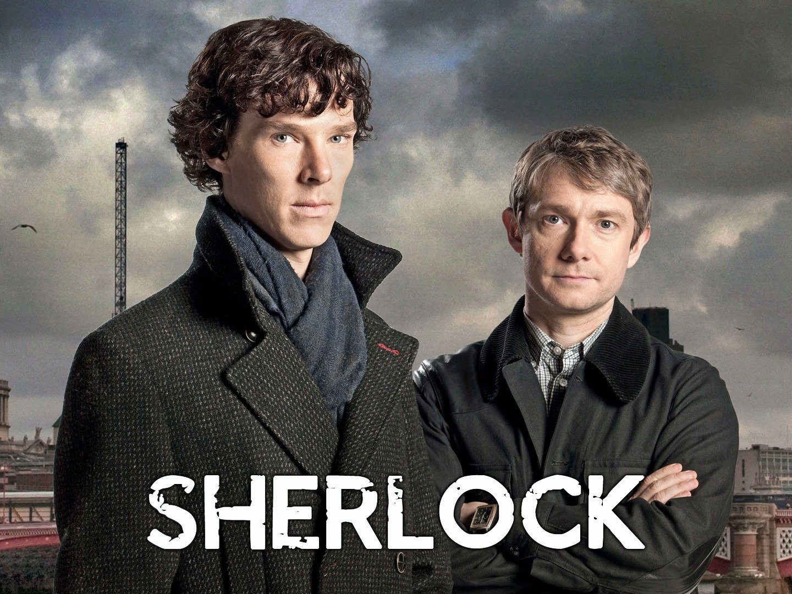

Mis series favoritas
Parks and Recreation
Sinopsis:
La serie sigue las andanzas, en formato de documental, de Leslie Knope (Amy Poehler), que trabaja en el departamento de parques y tiempo libre en Pawnee, Indiana. Knope se une a una enfermera llamada Ann para lograr convertir en un parque lo que es un trozo de tierra abandonado, tratando de navegar por las mil trabas de la administración municipal y varios colectivos.
Reparto:
- Amy Poehler
- Nick Offerman
- Aubrey Plaza
- Chris Pratt
- Aziz Ansari
- Jim O'Heir
- Retta
- Rashida Jones
- Adam Scott
- Rob Lowe
- ...
Juego de Tronos
Sinopsis:
La historia se desarrolla en un mundo ficticio de carácter medieval donde hay Siete Reinos. Hay tres líneas argumentales principales: la crónica de la guerra civil dinástica por el control de Poniente entre varias familias nobles que aspiran al Trono de Hierro; la creciente amenaza de "los otros", seres desconocidos que viven al otro lado de un inmenso muro de hielo que protege el Norte de Poniente; y el viaje de Daenerys Targaryen, la hija exiliada del rey que fue asesinado en una guerra civil anterior, y que pretende regresar a Poniente para reclamar sus derechos dinásticos. Tras un largo verano de varios años, el temible invierno se acerca a los Siete Reinos. Lord Eddard 'Ned' Stark, señor de Invernalia, deja sus dominios para ir a la corte de su amigo, el rey Robert Baratheon, en Desembarco del Rey, la capital de los Siete Reinos. Stark se convierte en la Mano del Rey e intenta desentrañar una maraña de intrigas que pondrá en peligro su vida y la de todos los suyos. Mientras tanto, diversas facciones conspiran con un solo objetivo: apoderarse del trono.
Reparto:
- Emilia Clarke
- Kit Harington
- Lena Headey
- Peter Dinklage
- Maisie Williams
- Nikolaj Coster-Waldau
- Sophie Turner
- Sean Bean
- Alfie Allen
- Richard Madden
- Natalie Dormer
- Gwendoline Christie
- Jason Momoa
- Pedro Pascal
- ...
The IT Crowd
Sinopsis:
Ayudados por una jefa que no ha tocado un ordenador en su vida, dos cerebritos viven para la informática en el sótano de la empresa de un perfecto zopenco.
Reparto:
- Richard Ayoade
- Chris O'Dowd
- Katherine Parkinson
- Matt Berry
- Chris Morris
- Adam Buxton
- Noel Fielding
Orange is the new black

Sinopsis:
Piper Chapman (Taylor Schiling), una mujer de Connecticut con una vida estable a punto de casarse, es detenida a raíz de un delito de drogas que cometió hace una década: en aquellos días llevó un maletín con droga para Alex Vause (Laura Prepon), una traficante y antigua amante de Piper. Tras el juicio, es enviada a prisión de mujeres en Litchfield, Nueva York. Allí convivirá con un grupo variopinto de internas.
Reparto:
- Taylor Schilling
- Laura Prepon
- Danielle Brooks
- Laverne Cox
- Uzo Aduba
- Kate Mulgrew
- Natasha Lyonne
- Dascha Polanco
- Samira Wiley
- ...
Rick and Morty

Sinopsis:
Comedia animada que narra las aventuras de un científico loco, Rick Sánchez, que regresa después de 20 años para vivir con su hija, su marido y sus hijos, Morty y Summer.
Sherlock
Sinopsis:
Moderna actualización del mito de Sherlock Holmes, ambientado en el Londres del siglo XXI. Sus insuperables habilidades de deducción y su arrogante distanciamiento emocional le convierten en el perfecto detective junto a su inseparable compañero John Watson.
Reparto:
- Benedict Cumberbatch
- Martin Freeman
- Rupert Graves
- Mark Gatiss
- Lars Mikkelsen
- Andrew Scott
- Una Stubbs
- Louise Brealey
- Lara Pulver
- Zoe Telford
- ...